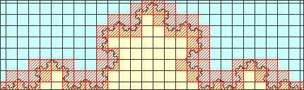

Purpose To determine the fractal dimension of natural and mathematical fractals using both manual and computer versions of the box-counting technique. To investigate the effect of grid placement on the box-count.
Materials Shapes, data recording pages for the shapes, grid transparencies, masking tape, rulers, either graph paper or calculators or a spread sheet that can do linear regression analysis, box-counting software
Conclusion Box-Counting provides a way of determining the dimension
of many natural fractals, but the tedium and possibility of errors in the
counting can lead to inaccurate results. In addition, the range of sizes
of the boxes is limited by the physicality of the box-counting process.
Finally, the result often is sensitive to the placement of the grids. This
latter effect is not an issue for mathematical fractals in the
Manual Box-counting data sheet
Computer Box-counting data sheet The box-counting software does these computations, but you may use these tables for comparisons in the grid-placement problems.